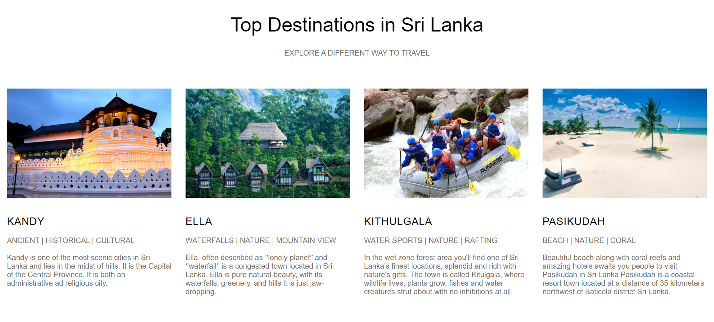
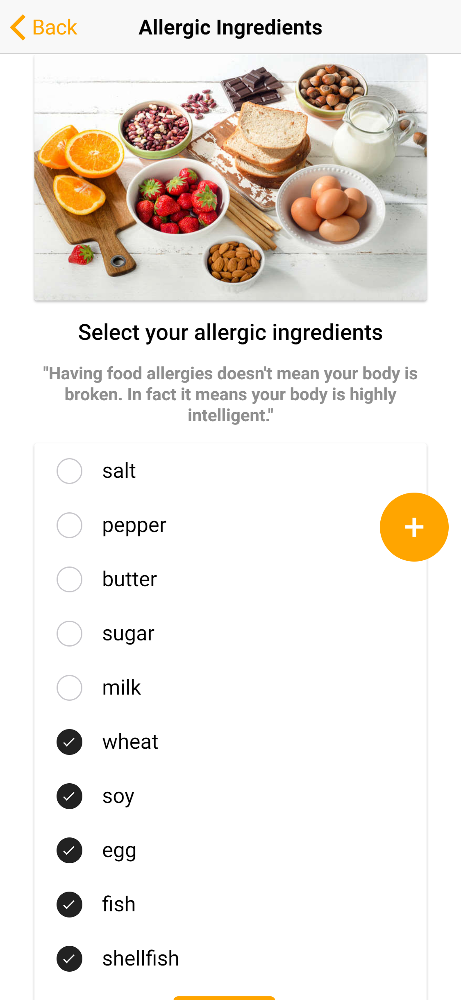

Hi There ! I'm
Naveen
Fernando
web designer
developer
blogger
Fernando
About
me
1
YEAR OF EXPERIENCE
10
COMPLETED PROJECTS
90K
LINES OF CODE LINES
5
AWARD'S WINNINGS
EDUCATION
-
2017 - 2021BACHELOR DEGREE IITInformatics Institute of Technology
(Affiliated with University of Westminster)
(BEng) Honours in Software Engineering -
2003 - 2017G.C.E (Advanced Level) 2017Nalanda College Colombo-10
Passed with three Good passes in Physical Science Stream. -
2003 - 2017G.C.E. (Ordinary Level) – 2013Nalanda College Colombo-10
Passed with eight distinction passes and one very good pass
-
2017 - 2018Android Development CourseCompleted the Android Application development Course.
MBrain Technologies (Pvt) Ltd Sri Lanka -
2016 - 2018PHP & Java Programming CourseCompleted the PHP & Java Training Program.
Industrial Master (Pvt) Ltd Sri Lanka -
2014 - 2016General English CourseCompleted the English language course up to upper intermediate three (UI3).
British Council Sri Lanka
EXPERIENCE
-
2019 - 2020FULL STACK DEVELOPERShipXpress (Pvt) Ltd Sri-Lanka.
TRAX project – Railroad shipping details management system. SmartGWT | Struts2 | Hibernate | SpringBoot | MySQL -
2019 - 2020FULL STACK DEVELOPERShipXpress (Pvt) Ltd Sri-Lanka.
TRAX Automation – Support application for TRAX application. ReactJS| Express | NodeJs | SpringBoot | MySQL -
2019 - 2020BACKEND DEVELOPERShipXpress (Pvt) Ltd Sri-Lanka.
Trip Engine – Application to scrape US railroad web sites. Puppeteer | Express | NodeJs | MySQL
-
2018 JunFULL STACK DEVELOPERFood recipes based on online restaurant reviews.
Python | Flask | JavaScript | Ionic | MySQL -
2019 OctFULL STACK DEVELOPERLibrary Management system.
Play Framework | Angular | Angular Material | OOP -
2017 JunFRONTEND DEVELOPERWebsite for Sri Lankan Tourism Industry
HTML | CSS | JavaScript | JQuery
MY
PROJECTS

MY
BLOGS


MY
GALLERY


{kind=link}
{kind=link}
{kind=link}
{kind=link}
{kind=link}
{kind=link}
{kind=link}
{kind=link}
{kind=link}
{kind=link}
{kind=link}
{kind=link}
{kind=link}
{kind=link}
{kind=link}
{kind=link}
{kind=link}
{kind=link}
{kind=link}
{kind=link}
{kind=link}
{kind=link}
{kind=link}
Tourism In Sri Lanka
As a Full Stack Developer, I was responsible of building the entire user interfaces and the backend of for the new website, redefining the User Experience and studying new interactions between the User and the Interface.
One of the most exciting experience was the entire front-end system was developed using pure HTML, CSS, and Javascript. This allows developer to have the full controll of the web componenets.
Online Pizza Delivery Ecommerce Application
As a Full Stack Developer, I was responsible of building the entire user interfaces and the backend of for the new website, redefining the User Experience and studying new interactions between the User and the Interface.
This is a ecommerce web application, which is implemented using Codeiniter, PHP HTML, CSS, Ajax, and JavaScript. One of the most exciting experience was Codeiniter framework uses MVC architecture. Which enables developers to implement web applications faster and helps during the furthure modifications.

Cardiac Hypertrophy Disease Prediction Application
This is a research and developement project which I had done for my final year project. The main objective of this research approach is to design, develop and test an application which is capable of predict cardiac hypertrophy and enlargement using electrocardiagram records.
The first phase of this project is to implement the machine learning model to predict the cardiac hypertrophy and enlargement. The model implementation was done using the latest machine learning techniques and libraries such as Random Forest, Scipy, Biospy, and CNN.
The second phase was to present the machine learning model in a web application. The front end of the web application was developed using the latest version of Angular framework and TypeScript. Since this is a research and developement project the backend implementation was done using the Flask framework and python language.
Reciepe Recommendation based on customer reviews
As a full stack developer i was responsible for implement the both front-end and the backend of the application
This a research and developement group project to asses the student software development skills
The main objective of this project is to design, develop and test an application which is capable of recommend food recipes for customers based on their restuarent reviews.
User interfaces of the application was implemented using Ionic which is a framework build on top of angular framework. It enables developers to build cross platform application. Since this is a R & D project the backend implementation was done using the flask framework and python language.
Furthuremore to the google api services has used to access customers restuarent reviews and search restuarent.


IMPERIUM - An IOT Project
This project is to provide information to its users with real time and accurate data of their electrical appliances and guide them for an affordable electricity bill while maintaining good practises for a energy preservation.
Target audiance of this project were General electricity consumers who are getting a bill of more than Rs. 5000/-, Small to Medium Scale Enterprises, and Consumers who are trying to reduce the bill amount with their busy schedules.
Project Poster
TRAX & TRAX Exception Automation Projects
TRAX Project
TRAX is a software as a service (Saas) architecture implementation of rail freight management solution that tracks, traces and proatively monitors shipments. A supply chain software solution control over business operations for railcar and iventory-in-monitorand by creating a secure platform for shippers. It allows viewing access for their buyers, and stockholders letting them see in transit goods across multiple careers, offers sales-on-track to multiple parties in real-time and provides shippers with real-time visibility to all their railcar shipment across multiple class 1 and shortline railroads.
As a Full stack software developer i was assigned to design and develop new interfaces based on customer requirements.
The fontend of the application developed using smartGWT and backend is developed using SpringBoot, Struts, Hibernate and Java.
TRAX Exception Automation Project
This is a supporting application for TRAX application. The application was build using ReactJs, NodeJs, Puppeteer and Axios.
This application was implemented to prevent the data discrepancy between TRAX application and US railroad web sites.
How to configure CKEditor 5 Rich text editor with Angular.

Hello folks, In this article, I am going to discuss how to setup CKeditor rich text editor into your Angular project,
I am currently using the latest versions of Angular, Node and npm
Angular CLI = 12.0.2
Node = 14.17.0
NPM = 7.14.0
Table of content
Node = 14.17.0
NPM = 7.14.0
- Download the CKeditor custom builder.
- Create a new Angular project.
- Add CKEditor to angular project and build the CKEditor project.
- CKeditor model Integration with Angular project.
[1] — Download the CKeditor custom builder
Step 1: visit CKeditor online-builder page
CKEditor 5 online builder | Rich text editor of tomorrowStep 2: Choose Classic builder option

Step 3: Choose the following plugins from the given list. These plugins doesn't need any CKeditor cloud support in order to use.

Step 4:Click Next button till you come to the following window
 Note: Make sure not to add commercial plugins, which need the CKeditor cloud support, If you add any plugin mistakenly website will prompt the following message.
Note: Make sure not to add commercial plugins, which need the CKeditor cloud support, If you add any plugin mistakenly website will prompt the following message.


Step 5: Click start and download the custom CKeditor5 build
[2] — Create a new Angular project
Step 1: visit angular web site
AngularUse the following command to install and run the angular project
Install angular cli globally
npm install -g @angular/cli
create project
ng new my-first-project
cd my-first-project
ng serve --open
cd my-first-project
ng serve --open
[3] — Add CKEditor to angular project and build the CKEditor project.
In order to use the plugins of CKEditor5, We have build the project like an angular application.
Step 1: Extract the downloaded CKEditor zip file

Step 2: Add the extracted CKEditor folder into src folder of the Angular project
Step 3: Then open a terminal from that folder


Step 4: Install all the node packages
npm install
After successfully build you will able to see a new node_module file is available.

Step 5: Step 5: Build the CKEditor project
npm run-script build
[4] — CKeditor model Integration with Angular project.
Step 1: Goto root directory of the angular project and install the ckeditor5-angular package
npm install @ckeditor/ckeditor5-angular --save
Step 2: import the installed module to app.module.ts
import { CKEditorModule } from ‘@ckeditor/ckeditor5-angular’;
add the module name to the imports as well
imports: [
CKEditorModule
]
Step 3: Visit app.components.ts app.module.ts import the ckeditor.js
give the correct path to the ckeditor.js file

import * as customBuild from '../app/ckCustomBuild/build/ckeditor';
Step 4: Create a variable for gold the html data and assigned a simple value
public htmlData:string = "
Hello, world!
"Next create a variable for the editor
public Editor = customBuild;

Create a variable for the CKEditor configurations. Here you can add all the selected plugins.
Visit app.component.html and define the ckeditor
Final step is to serve the angular project
ng serve —- open

Stream Messages Using Apache Kafka — 2.5.0.
Hello folks , In this article, I am going to discuss how to stream Messages Using Apache Kafka
Note : All the commands used in this article only work on a windows machine.
This report is written based on the current stable version (2.5.0) of Apache Kafka, which released on April 15, 2020.
Steps to Install Apache Kafka and run the Zookeeper and server.
i) Visit the Apache Kafka web site.
Apache Kafka 2.5.0 is the latest releaseii) Download the latest recommended version.

iii) Download and install 7-zip.
Download 7- Zip
v) Extract the kafka_2.12–2.5.0.tgz file using 7-zip.
v) Move the extracted File to C:\kafka>
 Your File Directory path should be like this
Your File Directory path should be like this
vi) Create two directories named for server and zookeeper,kafka-logs and zookeeper respectively.
C:\kafka\kafka_2.12–2.5.0>
mkdir kafka-logs zookeeper

vii) Go to C:\kafka\kafka_2.12–2.5.0\config>
Change the log.dir path to “kafka-logs” directory path in server.properties File.
log.dirs=C:/kafka/kafka_2.12–2.5.0/kafka-log
Change the dataDir path to “zookeeper” directory path in zookeeper.properties File.
dataDir=C:/kafka/kafka_2.12–2.5.0/zookeeper
viii) First let’s start the zookeeper by executing the below command.
.\bin\windows\zookeeper-server-start.bat .\config\zookeeper.properties

ix) Secondly, we have to start the server to serve data. Use the below command to run the server.
.\bin\windows\kafka-server-start.bat .\config\server.properties

Send records from producer to consumer through a Kafka topic using the console CLI.

i) Now let’s create a Kafka Topic to publish some records.
Command for creating a topic,
.\bin\windows\kafka-topics.bat --create --zookeeper localhost:2181 --replication-factor 1 --partitions 1 --topic Topic-A

ii) Execute the describe command to ensure that the topic created.
.\bin\windows\kafka-topics.bat --zookeeper localhost:2181 --describe --topic Topic-A


iii) Let’s execute this command to create a console producer and then publish some records to the topic we have created.
.\bin\windows\kafka-console-producer.bat --broker-list localhost:9092 --topic Topic-A

iv) Finally, create a console consumer and consume the publish messages from the producer.
.\bin\windows\kafka-console-consumer.bat --bootstrap-server localhost:9092 --topic Topic-A --from-beginning
Here you can see the published messages from the producer.

How to delete a topic
i) First, make sure to add this line to the server.properties File
delete.topic.enable=true
Otherwise, it will be prompted below message after you execute the delete command,

ii) Restart the zookeeper and server and run the delete command.
.\bin\windows\kafka-topics.bat --delete --zookeeper localhost:2181 --topic Topic-A

iii) Use describe command to confirm the delete process has succeeded.
.\bin\windows\kafka-topics.bat --zookeeper localhost:2181 --describe --topic Topic-A
Before deleting the Topic-A
After deleted the Topic-A
Apache-Kafka — Stream Custom Serialized Objects In 6 Steps.
Hello folks, In this article, I am going to discuss how to stream custom objects using docker.
- Set up the environment for Kafka (Kafka server, Zookeeper) and Docker.
- Set up the programming environment.
- Create a Serializer class for serialize the custom object.
- Create a Deserializer class for Deserialize the custom object.
- Create the producer and send the Avro serial object to the topic.
- Create customer and consume data published by the producer.

1. Set up the environment for Kafka (Kafka server, Zookeeper) and Docker.
First, we have to install docker in your local machine.You can download it from docker’s official page, which I mentioned below.
docs.docker.com
Here are the direct links you can download Docker for Mac and Windows OS.
Docker Desktop for Mac — Docker HubDocker Desktop for Windows — Docker Hub
To make sure you have a supported version of Docker. Run docker --version. Note that docker-compose is included as part of those desktop installs.
docker --version

First, we need to create a docker-compose file. Then we have to include Kafka and Zookeeper images to it. Docker images used in this project are presented by confluentinc.
Open the command prompt where your docker-compose.yml file located and run the following command, which will create a zookeeper instance and a Kafka server.Note that the file name should be “docker-compose” and the file extension must be “yml”, otherwise, the command will not work.
docker-compose -f docker-compose.yml up -d

Create a topic
After making sure that Kafka and Zookeeper are in good condition, we can create a topic to publish data. I named the topic “Topic-a” and set the number of partitions and the replication factor to 1.
If you follow the docker-compose file, the script will create a single node cluster. Since we are doing this project using a single node cluster, the replication factor for each partition of a topic must be one.
docker run --net=host --rm confluentinc/cp-kafka:5.3.1 kafka-topics --create --topic Topic-A --partitions 1 --replication-factor 1 --if-not-exists --zookeeper localhost:2181

List the topic
This command will list all the existing topics in the cluster.
docker run --net=host --rm confluentinc/cp-kafka:5.3.1 kafka-topics --list --zookeeper localhost:2181

Describe the topic
Using the describe command, we get an idea of which the broker is holding the leader and followers. In our case, we only have one leader who doesn’t have followers.
docker run --net=host --rm confluentinc/cp-kafka:5.3.1 kafka-topics --zookeeper localhost:2181 --describe --topic Topic-A

Stop Zookeeper and Kafka server
If for any reason you want to stop the zookeeper and Kafka server, use the docker-compose down command, which ends all Docker containers from running.
Note that this command also deletes topics.docker-compose down

If you have followed my approach so far. By now you have a zookeeper and a Kafka server running on top of docker. Also, we created a topic to stream data.
2. Set up the programming environment.
You can use any developing tool that supports Java for this project. I use IntelliJ idea. First, create a Maven project and define all the necessary project dependencies in the “pom.xml” file.
org.apache.kafkaThen we need to create a Employee class. Here I have add three instance variables — id, name, join date.The class has one explicitly defined constructor which takes the parameters.
3. Create a Serializer class for serialize the custom object.
Since the kafka broker accepts byte data , we need a serializer class to serialize employee object to bytecode
4. Create a Deserializer class for Deserialize the custom object.
When the consumer read these objects, it should deserialize in to the employee object.
5. Create the producer and send the Avro serial object to the topic.
Now lets create a producer class to publish the employee object to kafka topic. As you can see here i created five employee objects .The default “value.serializer” is StringSerializer, here we have to change it to custom serializer — “EmployeeSerializer” .
6. Create customer and consume data published by the producer.
Once the producer producers the message to a kafka topic . We need a consumer to consume published messages.
And now you can run the producer to produce messages to kafka topic.

Lets run the consumer to consumed the published messages.

Congratulations, you have successfully implemented a Kafka producer and a consumer, which can write and read custom objects respectively.
This method is only for use on systems that do not change the properties of the message object.
If you have a system that often changes its properties, we need to build a system that works for both old and new objects simultaneously.
In such cases, we can use the Apache Avro to serialize and deserialize objects, and schema registry to store and retrieve schemas.
The source code of this project will be available in this repository.
In case if you miss anything, Here is the Github repository for this project
Setup Environment For Oracle Database.
Hello my gorgeous friends in internet , In this article, I am going to discuss how to Setup Environment For Oracle Database.

i) Visit the Oracle Database Express Edition (XE) site.
Oracle Database Express Edition (XE) Downloadsii) Download the package which is given for windows.

iii) unzip the downloaded package and run the setup.exe
iv) Always make sure to use
Username : SYSTEM
Password : oracle
Password : oracle
v) Visit the Oracle SQL Developer site and download the developer package
SQL Developervi) Download the package which is for windows.

vii) Unzip the package and open the sqldeveloper.exe
viii) Add these credentials
Connection Name : test db (any name you preffered)
Username : SYSTEM
Password : oracle
Note : Click test button and check the status . if the status is Success you are good to connect and continue work
Username : SYSTEM
Password : oracle

ix) Execute the below queries and check the results in database.
CREATE TABLE Persons (PersonID int,LastName varchar(255), FirstName varchar(255),Address varchar(255),City varchar(255));
insert into persons VALUES (1,’Naveen’,’Fernando’,’Boralesgamuwa’,’Colombo’);
SELECT * FROM Persons;
insert into persons VALUES (1,’Naveen’,’Fernando’,’Boralesgamuwa’,’Colombo’);
SELECT * FROM Persons;